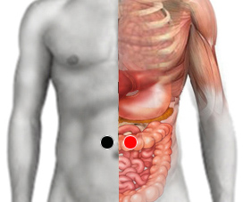

Estafilococo epidermidis
Pares
epiplón - epiplón
rama mandibular - rama mandibular
mandíbula - mandíbula
supraempeine - infratibia

Generalidades:
Problemas de la piel. Responsable de enfermedades cutáneas cuando la flora se desequilibra. Se asocia a Perirrenal.
Produce toxinas que alcalinizan la piel. Checar pares MANDIBULA y los correspondientes con enfermedades exantematicas. Produce Acné vulgar:
Bacteria oportunista que habita normalmente en la piel y mucosas de los humanos y otros animales. Su membrana le permite adherirse al plástico, por lo que puede causar infección cuando existen dispositivos como catéteres, sondas, etc. Puede causar endocarditis si el paciente usa válvula cardiaca.
Trasmisión:
Es muy común encontrarlo en la piel de humanos y otras especies. Infección en hospitales.